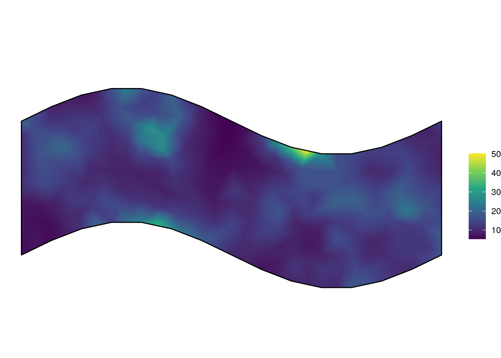
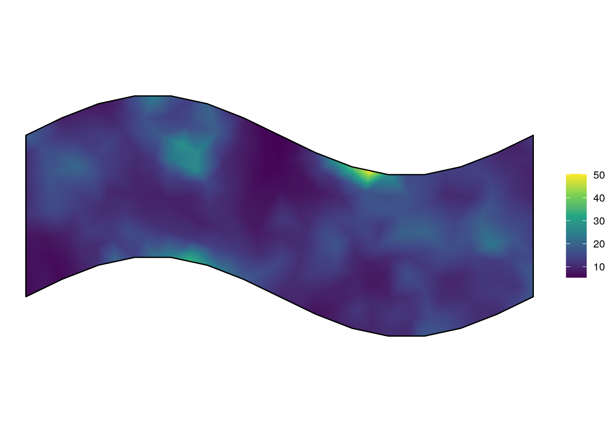
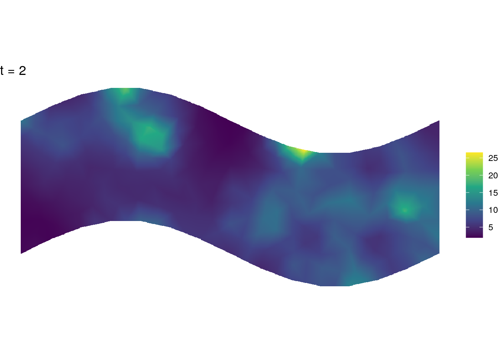
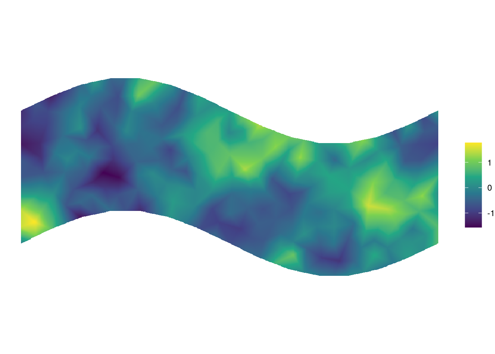
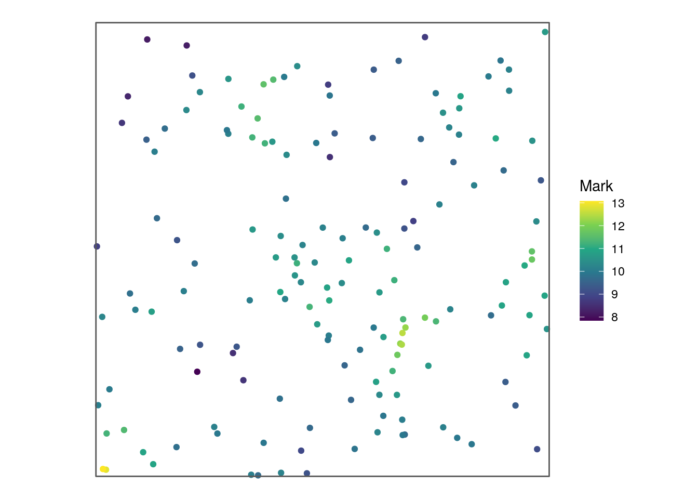

Chapter 1 Datasets in stelfi
Below are the data packaged within stelfi.
## Item Title
## [1,] "horse_mesh" "Example Delaunay triangulation"
## [2,] "horse_sf" "Example 'sf' 'POLYGON'"
## [3,] "iraq_terrorism" "Terrorism in Iraq, 2013 - 2017"
## [4,] "marked" "Example marked point pattern data set"
## [5,] "nz_earthquakes" "Earthquakes in Canterbury, NZ, 2010 - 2014"
## [6,] "nz_murders" "Murders of NZ, 2004 - 2019"
## [7,] "retweets_niwa" "Retweets of NIWA's viral leopard seal Tweet"
## [8,] "sasquatch" "Sasquatch (bigfoot) sightings in the USA, 2000 - 2005"
## [9,] "uk_serial" "Serial killers of the UK, 1828 - 2015"
## [10,] "xyt" "Self-exciting point pattern"1.1 Temporal point pattern data
retweets_niwa
In 2019 a NIWA scientist found a working USB in the scat of a leopard seal, they then tweeted about it in the hopes of finding its owner. In this chapter a Hawkes process is fitted to these data.
NIWA is searching for the owner of a USB stick found in the poo of a leopard seal…
— NIWA (@niwa_nz) February 5, 2019
Recognise this video? Scientists analysing the scat of leopard seals have come across an unexpected discovery – a USB stick full of photos & still in working order! https://t.co/2SZVkm5az4 pic.twitter.com/JLEC8vuHH0
The retweets_niwa dataset contains the retweet timestamps for this tweet.
## [1] "2019-02-07 06:50:08 UTC" "2019-02-07 06:50:08 UTC"
## [3] "2019-02-07 06:49:22 UTC" "2019-02-07 06:48:48 UTC"
## [5] "2019-02-07 06:47:52 UTC" "2019-02-07 06:47:42 UTC"ggplot(data.frame(time = retweets_niwa), aes(x = time)) +
geom_histogram() + ylab("Retweet frequency") + xlab("") +
theme_bw()
uk_serial
Murder UK documents some of the UKs most infamous multiple murderer cases. The uk_serial dataset contains summary information about the documented cases along with approximate timeframes.
## number_of_kills years name aka
## 1 300 1995 - 1998 Dr. Harold Shipman Dr. Death
## 2 160 1949 - 1983 Dr. John Bodkin Adams
## 3 26 1978 Peter Dinsdale Bruce Lee
## 4 21 1865 - 1872 Mary Ann Cotton
## 5 16 1828 William Burke and William Hare Body Snatchers
## 6 15 1944 - 1948 John George Haigh Acid Bath Murderer
## year_start year_end date_of_first_kill population_million
## 1 1995 1998 03/1995 58.02
## 2 1949 1983 08/1949 50.32
## 3 1973 NA 06/1973 56.19
## 4 1865 1872 01/1865 24.36
## 5 1828 NA 02/1828 15.73
## 6 1944 1948 09/1944 49.02uk_serial %>%
mutate(time = paste(date_of_first_kill, "/01", sep='')) %>%
mutate(time = as.Date(time, "%m/%Y/%d")) %>%
ggplot(aes(x = time)) +
geom_histogram() +
ylab("Frequency of known first kill") +
xlab("") + theme_bw()
1.2 Spatiotemporal point pattern data
Using maps to create sf objects of country boundaries:
us <- maps::map("usa", fill = TRUE, plot = FALSE) %>%
sf::st_as_sf() %>%
sf::st_make_valid()
nz <- maps::map("nz", fill = TRUE, plot = FALSE) %>%
sf::st_as_sf() %>%
sf::st_make_valid()
iraq <- maps::map("world", "Iraq", fill = TRUE, plot = FALSE) %>%
sf::st_as_sf() %>%
sf::st_make_valid()sasquatch
The Bigfoot Field Researchers Organization (BFRO) documents Bigfoot (Sasquatch) sightings; some data have been collated and packaged in stelfi assasquatch.
## Simple feature collection with 972 features and 27 fields
## Geometry type: POINT
## Dimension: XY
## Bounding box: xmin: -124.5301 ymin: 25.84875 xmax: -70.75587 ymax: 48.9058
## CRS: +proj=longlat +datum=WGS84 +no_defs +ellps=WGS84 +towgs84=0,0,0
## # A tibble: 972 × 28
## observed locat…¹ county state season title date number class…² geohash
## * <chr> <chr> <chr> <chr> <chr> <chr> <date> <dbl> <chr> <chr>
## 1 "For the… This l… Shann… Sout… Fall Repo… 2002-12-04 5173 Class A 9xxntv…
## 2 "My fami… East o… Wayne… New … Fall Repo… 2003-09-20 26566 Class A dr9q4m…
## 3 "While t… Ward C… Ward … Nort… Spring Repo… 2000-04-21 751 Class A c8xfw2…
## 4 "(Please… <NA> Mount… Nort… Winter Repo… 2004-02-22 8165 Class A c8qzwb…
## 5 "I was c… forest… Warre… New … Summer Repo… 2005-12-21 13276 Class B dr4xfu…
## 6 "My summ… We wer… Taos … New … Spring Repo… 2000-05-17 4904 Class B 9wt01q…
## 7 "On Aug … From G… McLea… Nort… Summer Repo… 2005-08-27 12562 Class A c8rx3m…
## 8 "Foot pr… The lo… McKen… Nort… Winter Repo… 2004-02-26 8130 Class B c8qyyr…
## 9 "The fol… Georgi… Sarpy… Nebr… Summer Repo… 2005-01-06 7809 Class A 9z7f40…
## 10 "We live… (Locat… Dougl… Nebr… Summer Repo… 2005-08-13 12482 Class A 9z7f97…
## # … with 962 more rows, 18 more variables: temperature_high <dbl>,
## # temperature_mid <dbl>, temperature_low <dbl>, dew_point <dbl>,
## # humidity <dbl>, cloud_cover <dbl>, moon_phase <dbl>,
## # precip_intensity <dbl>, precip_probability <dbl>, precip_type <chr>,
## # pressure <dbl>, summary <chr>, uv_index <dbl>, visibility <dbl>,
## # wind_bearing <dbl>, wind_speed <dbl>, year <dbl>, geometry <POINT [m]>, and
## # abbreviated variable names ¹location_details, ²classificationggplot(sasquatch, aes(x = date)) + geom_histogram(bins = 150) +
ylab("Frequency of Sasquatch sightings") + xlab("") +
theme_bw()ggplot(sasquatch) +
geom_sf(alpha = 0.3) +
coord_sf() +
geom_sf(data = us, fill = NA) +
theme_classic()
nz_earthquakes
GeoNet Quake Search catalogues New Zealand earthquake occurrence; some of these data have been and packaged in stelfi as nz_earthquakes. In this chapter a Hawkes process is fitted to these data.
## Simple feature collection with 3824 features and 3 fields
## Geometry type: POINT
## Dimension: XY
## Bounding box: xmin: 169.83 ymin: -44.86892 xmax: 175.6328 ymax: -41.8628
## CRS: +proj=longlat +datum=WGS84 +no_defs +ellps=WGS84 +towgs84=0,0,0
## First 10 features:
## origintime magnitude depth geometry
## 1 2014-12-24 07:46:00 3.208996 13.671875 POINT (172.7133 -43.57944)
## 2 2014-12-24 06:43:00 4.109075 5.820312 POINT (172.7204 -43.55752)
## 3 2014-12-14 08:53:00 3.240377 5.058594 POINT (172.3641 -43.62563)
## 4 2014-12-12 13:37:00 4.459034 9.394531 POINT (172.368 -43.63492)
## 5 2014-11-20 08:24:00 3.116447 10.039062 POINT (172.7836 -43.42493)
## 6 2014-11-18 14:19:00 3.158710 11.269531 POINT (172.7936 -43.4897)
## 7 2014-11-02 06:45:00 3.708697 14.960938 POINT (170.2523 -44.48656)
## 8 2014-10-11 22:32:00 3.456145 39.804688 POINT (173.1383 -42.67562)
## 9 2014-10-01 20:58:00 3.106894 11.386719 POINT (172.6879 -43.49002)
## 10 2014-09-30 15:29:00 3.911931 9.335938 POINT (172.1428 -43.25048)ggplot(nz_earthquakes, aes(x = origintime)) + geom_histogram(bins = 100) +
ylab("Frequency of earthquakes") + xlab("") +
theme_bw()
ggplot(nz_earthquakes) +
geom_sf(alpha = 0.1) +
coord_sf() +
geom_sf(data = nz, fill = NA) +
theme_classic()
nz_murders
The Homicide Report documents homicides in New Zealand. The nz_murders dataset contains summary information about the documented cases. In this chapter a spatiotemporal self-exciting model is fitted to these data.
## Simple feature collection with 967 features and 11 fields
## Geometry type: POINT
## Dimension: XY
## Bounding box: xmin: 167.9161 ymin: -46.96127 xmax: 178.3955 ymax: -34.54022
## CRS: +proj=longlat +datum=WGS84 +no_defs +ellps=WGS84 +towgs84=0,0,0
## First 10 features:
## sex age date year cause killer
## 1 Male 41 Jan 5 2004 stabbing friend
## 2 Male 46 Jan 8 2004 pick axe wounds friend
## 3 Male 0 Jan 15 2004 asphyxiation (suffocation) mother
## 4 Female 46 Feb 1 2004 blunt force trauma partner
## 5 Male 10 Feb 2 2004 stabbing father
## 6 Female 2 Feb 2 2004 stabbing father
## 7 Male 36 Feb 4 2004 stabbing partners ex-partner
## 8 Male 20 Feb 8 2004 car crash friend
## 9 Male 29 Feb 8 2004 blunt force trauma strangers
## 10 Female 32 Feb 15 2004 blunt force trauma husband
## name full_date month cause_cat region
## 1 Donald Linwood 2004-01-05 January Violent weapon Canterbury
## 2 James Weeks 2004-01-08 January Violent weapon Canterbury
## 3 Gabriel Harrison-Taylor 2004-01-15 January Asphyxia Auckland
## 4 Odette Lloyd-Rangiuia 2004-02-01 February Blunt force trauma Canterbury
## 5 Te Hau OCarroll 2004-02-02 February Violent weapon Wellington
## 6 Ngamata OCarroll 2004-02-02 February Violent weapon Wellington
## 7 Darryn McRobert 2004-02-04 February Violent weapon Canterbury
## 8 Peretiso Sauni 2004-02-08 February Car crash Auckland
## 9 Shannon McComb 2004-02-08 February Blunt force trauma Canterbury
## 10 Asolelei Sameulu 2004-02-15 February Blunt force trauma Auckland
## geometry
## 1 POINT (171.6442 -43.63394)
## 2 POINT (172.1305 -43.28563)
## 3 POINT (174.8498 -36.92575)
## 4 POINT (172.6327 -43.55006)
## 5 POINT (175.1195 -40.73297)
## 6 POINT (175.1193 -40.73273)
## 7 POINT (172.5172 -43.53866)
## 8 POINT (174.7335 -36.89708)
## 9 POINT (172.6429 -43.54363)
## 10 POINT (174.6274 -36.90353)ggplot(nz_murders, aes(x = full_date)) + geom_histogram(bins = 100) +
ylab("Frequency of murders") + xlab("") +
theme_bw()
iraq_terrorism
The Global Terrorism Database (GTD) documents information on terrorism events worldwide; some of these data have been and packaged in stelfi as iraq_terrorism.
## Simple feature collection with 4208 features and 16 fields
## Geometry type: POINT
## Dimension: XY
## Bounding box: xmin: 38.92288 ymin: 30.51005 xmax: 47.7781 ymax: 36.92948
## CRS: +proj=longlat +datum=WGS84 +no_defs +ellps=WGS84 +towgs84=0,0,0
## First 10 features:
## iyear imonth iday country success nkill specificity
## 18055 2013 4 18 Iraq TRUE 28 1
## 18109 2013 4 20 Iraq TRUE 0 1
## 18110 2013 4 20 Iraq TRUE 0 1
## 18111 2013 4 20 Iraq TRUE 0 1
## 18864 2013 5 16 Iraq TRUE 3 1
## 18865 2013 5 16 Iraq TRUE 3 1
## 18866 2013 5 16 Iraq TRUE 2 1
## 18867 2013 5 16 Iraq TRUE 3 1
## 19161 2013 5 27 Iraq TRUE 6 1
## 19166 2013 5 27 Iraq TRUE 1 1
## gname x_coord y_coord z_coord
## 18055 Islamic State of Iraq and the Levant (ISIL) 0.5974251 0.5844656 0.5490748
## 18109 Islamic State of Iraq and the Levant (ISIL) 0.5997164 0.5864987 0.5443892
## 18110 Islamic State of Iraq and the Levant (ISIL) 0.5992751 0.5859289 0.5454876
## 18111 Islamic State of Iraq and the Levant (ISIL) 0.5959873 0.5733453 0.5622049
## 18864 Islamic State of Iraq and the Levant (ISIL) 0.5974251 0.5844656 0.5490748
## 18865 Islamic State of Iraq and the Levant (ISIL) 0.5974251 0.5844656 0.5490748
## 18866 Islamic State of Iraq and the Levant (ISIL) 0.5974251 0.5844656 0.5490748
## 18867 Islamic State of Iraq and the Levant (ISIL) 0.5876310 0.5507342 0.5927745
## 19161 Islamic State of Iraq and the Levant (ISIL) 0.5974251 0.5844656 0.5490748
## 19166 Islamic State of Iraq and the Levant (ISIL) 0.5974251 0.5844656 0.5490748
## popdensity luminosity tt utm_x utm_y
## 18055 0.4065874 1.0924644 -0.3210921 333098.1 4007920.00
## 18109 -0.3479151 0.2298066 -0.2726546 407264.8 5332968.87
## 18110 -0.3479432 0.9717434 -0.3210921 401682.9 5252649.56
## 18111 -0.3783331 1.0521158 -0.3210921 405272.2 5344797.97
## 18864 0.4065874 1.0924644 -0.3210921 595450.3 4078540.46
## 18865 0.4065874 1.0924644 -0.3210921 595450.3 4078540.46
## 18866 0.4065874 1.0924644 -0.3210921 723492.7 45579.28
## 18867 -0.3665068 1.0924644 -0.3210921 815931.5 435892.29
## 19161 0.4065874 1.0924644 -0.3210921 252226.3 3703963.04
## 19166 0.4065874 1.0924644 -0.3210921 756886.0 4023175.15
## geometry
## 18055 POINT (44.37177 33.30357)
## 18109 POINT (44.3616 32.98293)
## 18110 POINT (44.35484 33.05799)
## 18111 POINT (43.89071 34.20842)
## 18864 POINT (44.37177 33.30357)
## 18865 POINT (44.37177 33.30357)
## 18866 POINT (44.37177 33.30357)
## 18867 POINT (43.14357 36.35415)
## 19161 POINT (44.37177 33.30357)
## 19166 POINT (44.37177 33.30357)iraq_terrorism %>%
mutate(date = paste(iday, imonth, iyear, sep = "/")) %>%
mutate(date = as.Date(date, "%d/%m/%Y")) %>%
ggplot(., aes(x = date)) + geom_histogram(bins = 150) +
ylab("Frequency of attacks") + xlab("") +
theme_bw()
ggplot(iraq_terrorism) +
geom_sf(alpha = 0.3) +
coord_sf() +
geom_sf(data = iraq, fill = NA) +
theme_classic()
1.3 Simulated data
xyt
In this chapter a log-Gaussian Cox process is fitted to these data and in this chapter a spatiotemporal selfexciting model is fitted.
## Simple feature collection with 654 features and 1 field
## Geometry type: GEOMETRY
## Dimension: XY
## Bounding box: xmin: 0 ymin: -2.974928 xmax: 12.56637 ymax: 2.974928
## CRS: NA
## First 10 features:
## label geom
## 1 window POLYGON ((10.77117 -2.78183...
## 2 point POINT (6.8074 -2.034423)
## 3 point POINT (7.558362 -2.193865)
## 4 point POINT (8.085083 -2.080938)
## 5 point POINT (8.121308 -2.522357)
## 6 point POINT (8.362448 -2.303117)
## 7 point POINT (9.000749 -2.955328)
## 8 point POINT (9.147803 -2.243146)
## 9 point POINT (9.261744 -2.408326)
## 10 point POINT (8.532312 -2.48986)
marked
In this chapter a marked log-Gaussian Cox process is fitted to these data.
data(marked, package = "stelfi")
marked_sf <- sf::st_as_sf(x = marked,
coords = c("x", "y"))
marked_sf## Simple feature collection with 159 features and 3 fields
## Geometry type: POINT
## Dimension: XY
## Bounding box: xmin: 0.006606752 ymin: 0.006502493 xmax: 2.985087 ymax: 2.938558
## CRS: NA
## First 10 features:
## m1 m2 m3 geometry
## 1 10.008609 0 9.616468 POINT (0.08935799 0.5756269)
## 2 8.730592 0 6.918024 POINT (2.177973 2.90455)
## 3 11.330677 0 16.798212 POINT (2.250791 1.024792)
## 4 11.338656 0 8.073566 POINT (2.033398 1.038773)
## 5 9.395725 0 9.977866 POINT (2.777002 0.4685442)
## 6 10.331965 0 10.615245 POINT (0.5988652 2.422233)
## 7 10.069787 0 11.268171 POINT (1.541071 0.9307671)
## 8 9.717775 0 13.306125 POINT (2.615062 1.064561)
## 9 10.071326 0 18.300715 POINT (0.3882139 2.146845)
## 10 10.147740 0 16.751740 POINT (1.501552 1.64466)domain <- list(3 * cbind(c(0, 1, 1, 0, 0), c(0, 0, 1, 1, 0))) %>%
sf::st_polygon() %>% sf::st_sfc() %>% sf::st_sf(geometry = .)
ggplot(marked_sf, aes(col = m1)) +
geom_sf() + labs(color = "Mark") +
scale_color_continuous(type = "viridis") +
geom_sf(data = domain, fill = NA, inherit.aes = FALSE) +
theme_void()
horse_mesh
In this chapter we illustrate different geometric metrics of this triangulation.
## Simple feature collection with 396 features and 4 fields
## Geometry type: POLYGON
## Dimension: XY
## Bounding box: xmin: -17.96875 ymin: -11.78261 xmax: 17.26563 ymax: 11.65217
## CRS: NA
## First 10 features:
## V1 V2 V3 ID geometry
## 1 172 30 186 1 POLYGON ((8.441837 -2.16176...
## 2 28 188 162 2 POLYGON ((10.43359 0.913043...
## 3 168 186 42 3 POLYGON ((5.818232 -3.05894...
## 4 117 57 63 4 POLYGON ((-3.660156 -8.0326...
## 5 270 253 121 5 POLYGON ((-8.43636 2.023352...
## 6 92 144 169 6 POLYGON ((-8.042969 4.47826...
## 7 175 137 240 7 POLYGON ((5.689521 -1.13385...
## 8 182 148 111 8 POLYGON ((10.50244 7.199319...
## 9 253 169 121 9 POLYGON ((-7.850425 2.87106...
## 10 14 15 116 10 POLYGON ((13.3125 11.56522,...